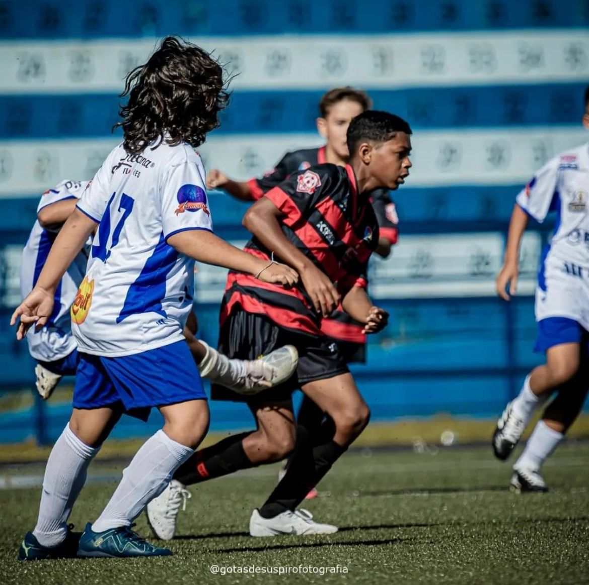

Denílson Pereira é um talentoso jogador de futebol que começou sua jornada nas escolinhas de base, onde desde cedo demonstrou grande habilidade e dedicação ao esporte. Com o tempo, destacou-se em competições regionais, chamando a atenção de treinadores e olheiros. Seu esforço e comprometimento o levaram a conquistar uma vaga no Oeste, clube que disputa campeonatos importantes no futebol brasileiro. Hoje, Denílson é uma promessa em ascensão, representando a perseverança e o talento que surgem das categorias de base.
INSTAGRAM: dede_oficial_011

First slide label
Some representative placeholder content for the first slide.

Second slide label
Some representative placeholder content for the second slide.

Third slide label
Some representative placeholder content for the third slide.